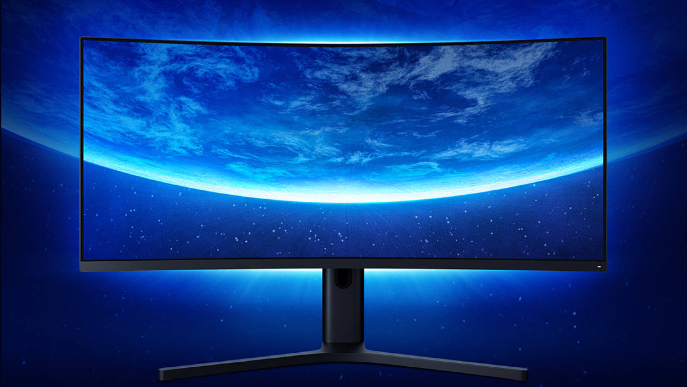

Star Wars Jedi: Fallen Order, consigli per godersi il gioco Respawn
Ecco una manciata di piccoli consigli per chi ha appena cominciato o intende iniziare il suo viaggio in Star Wars Jedi: Fallen Order.
GUIDA di Giaccone Nicolò - 24/11/2019

INDICE
A pochi giorni dall'uscita di Star Wars Jedi: Fallen Order, abbiamo deciso di darvi qualche consiglio prima di cominciare il vostro viaggio nei panni di Cal Kestis. Pochi semplici suggerimenti per godervi al meglio l'avventura e per affrontare i numerosi nemici che incontrerete lungo il percorso.
BD-1, un coltellino svizzero
Anzitutto, tenete sempre d'occhio BD-1. Una volta che si sarà unito a voi, il piccolo droide resterà costantemente aggrappato alla vostra schiena, in maniera simile a come faceva ID10 nella campagna di Battlefront 2. Nel corso del viaggio otterrà nuove abilità utili durante l'esplorazione e i combattimenti, ma se fate caso ai led luminosi dietro la testa, noterete che cambiano colore in base alla vostra salute.
In questo modo potete rendervi conto se siete a corto di energia senza bisogno di guardare l'indicatore nell'angolo in basso dello schermo. Inoltre, BD-1 fischietta e si allontana quando passate vicino a un oggetto con cui interagire o che è possibile scansionare. In alcuni casi si tratta di contenitori che nascondono collezionabili e migliorie, mentre altre volte sono dettagli dello scenario che aiutano ad approfondire e arricchire la narrazione.
La Banca Dati
A proposito di ambientazioni: non correte. Fermatevi e godetevi ogni dettaglio. Fin dai primi minuti, gli sviluppatori hanno riempito ogni pianeta di particolari: da scritte in Aurebesh, l'alfabeto del mondo di Star Wars, a oggetti e creature aliene che prendono a piene mani dall'immaginario del franchise, sia dai film e dalle serie animate, sia dai vecchi videogiochi. Via via che esplorate e analizzate le ambientazioni grazie a BD-1, nuove pagine si aggiungeranno alla vostra Banca Dati, e anche in questo caso il consiglio è di prendersi un po' di tempo per leggere tutte le informazioni, così da apprezzare meglio i pianeti, le fazioni e le sottotrame create dagli sviluppatori.
In cerca di scorciatoie
Fare attenzione a ogni angolo della mappa si rivela fondamentale anche in combattimento, visto che l'ambiente circostante può essere sfruttato a proprio vantaggio. Utilizzando i poteri della Forza è possibile lanciare i nemici in un burrone, farli schiantare contro una parete elettrificata o fare in modo che si colpiscano a vicenda. In molti casi, usare l'astuzia è il modo più facile per sfoltire numerosi gruppi di nemici, o eliminare rapidamente gli avversari più ostici, come ad esempio i Purge Trooper.
Senza contare poi che più esplorate una mappa e più diventa importante trovare le scorciatoie: in Fallen Order non c'è il viaggio rapido, quindi vi consigliamo di passare un po' di tempo per aprire nuovi passaggi e sbloccare percorsi alternativi. Questo vi sarà molto utile dopo, quando dovrete attraversare l'intera mappa per tornare alla nave.
La parata è vostra amica
Sempre in combattimento, non dimenticate mai di parare. Eseguire delle parate al momento giusto è un ottimo modo per sbilanciare l'avversario e contrattaccare, ma è facile dimenticare che questa regola vale sia contro i nemici umani, sia contro le creature aliene. Fatelo sempre insomma, a prescindere che vi troviate davanti uno stormtrooper o un grosso topo alieno. Allo stesso modo non dimenticate di sfruttare tutti i poteri a vostra disposizione. Dal Force Slow alla Spinta della Forza, ogni potere ha un suo vantaggio in combattimento, e col tempo imparerete qual è il potere più utile contro ciascuna tipologia di nemico.
Il potenziamento della spada
L'ultimo consiglio riguarda una particolare personalizzazione della spada laser. Niente di grosso o che non si fosse già intuito, ma se non volete sapere niente a riguardo vi suggeriamo di interrompere la lettura.
Abbastanza presto nel corso dell'avventura, Cal troverà un banco di lavoro dove personalizzare la sua spada laser e trasformarla in una spada a doppia lama, come quella di Darth Maul. A quel punto si potrà passare da una modalità della spada all'altra in qualsiasi momento, cosa che ha dei benefici in battaglia. La lama singola è più efficace nei combattimenti 1 contro 1 o al massimo 1 contro 2, mentre la spada laser a doppia lama si rivela più utile contro gruppi numerosi di avversari, soprattutto dopo aver sbloccato certe combo e attacchi speciali.
Il nostro consiglio è quindi quello di recuperare il potenziamento nel più breve tempo possibile: appena avete la possibilità, recatevi a Dathomir e proseguite finché non trovate un tavolo da lavoro. Ce n'è un altro anche su Kashyyyk, ma trovarlo richiede un po' di tempo in più.
- Top 3 - gli articoli più letti
-
 Call of Duty: Modern Warfare,
la recensione
Call of Duty: Modern Warfare,
la recensione
-
 Star
Wars Jedi: Fallen Order,
la recensione
Star
Wars Jedi: Fallen Order,
la recensione
- Xiaomi entra nel mondo dei monitor con Mi Surface Display, un 34 pollici WQHD con FreeSync, la recensione
- La recensione del mese
-
 MSI
RX 5700 XT Gaming X, la recensione
MSI
RX 5700 XT Gaming X, la recensione
- I giochi più attesi